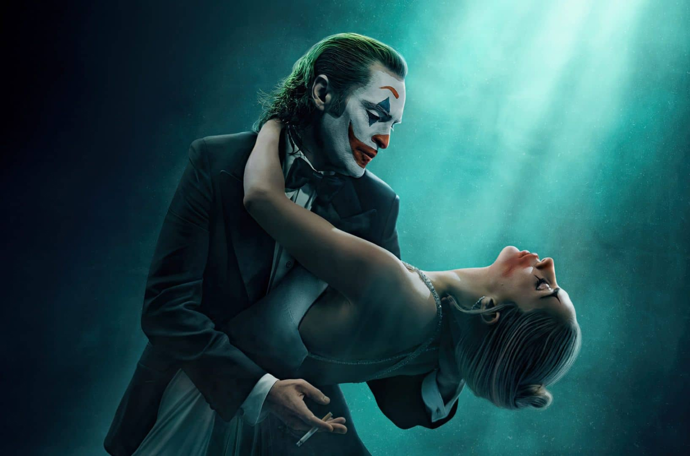

- Musical/Thriller
- 2h18m
- 2024
Arthur Fleck está internado em Arkham, aguardando julgamento por seus crimes como o Coringa. Enquanto lida com sua dupla identidade, ele não só se depara com o amor verdadeiro, mas encontra a música que sempre esteve dentro de si.
